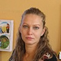

Дошкольное отделение школы № 1360
В 2015 году 40% первоклассников Школы № 1360 пришли из дошкольного отделения.
- Миллионная улица, 12А
- Краснобогатырская улица, 23А
- 1-я Мясниковская улица, 8/10
- Краснобогатырская улица, 25А
- Игральная улица, 7А
- Бойцовая улица, 18
Воспитатели
Воспитатели, которых чаще всего благодарят родители (отзывы и профили сотрудников взяты с официального сайта школы):|
Воспитатель
Зарубина Татьяна Федоровна
3 благодарности |
Воспитатель
Алхименко Наталья Александровна
2 благодарности |
Воспитатель
Савенко Мария Сергеевна
2 благодарности |
Воспитатель
Шилова Елена Алексеевна
2 благодарности |
|
Воспитатель
Карра Мария Вячеславовна
2 благодарности |
Воспитатель
Козлова Юлия Владимировна
1 благодарность |

Воспитатель
Кобель Кристина Валерьевна
1 благодарность |
Воспитатель
Алексеева Екатерина Витальевна
1 благодарность |
Отзывы
Данные собраны c официального сайта школы и через форму для отзывов.
Родительский комитет средней группы дошкольного отделения хочет выразить благодарность нашему чудесному садику и воспитателям. Для наших детей детский садик, это второй дом. Большую часть своей маленькой жизни они проводят в нем. Каждое утро в детском саду, каждого ребенка ждет теплая и уютная обстановка. При входе в группу нас встречает заботливая и внимательная Елена Алексеевна, которая всегда вежлива и приветлива. О прекрасном отношении к детям со стороны воспитателя можно судить по той любви и привязанности со стороны детей. Как они с большим удовольствием идут каждый день черпать все новые и новые знания, навыки и умения. Наша Елена Алексеевна- творчески работающий, хорошо знающий психологию детей дошкольного возраста, воспитатель и настоящий педагог. К детям относится с большой заботой и пониманием. К каждому малышу находит индивидуальный подход. Особо хочется отметить обьем и разнообразие творческих занятий в группе! Все дети учатся создавать " Шедевры творчества" . А какие у нас утренники!!! Сколько стихов, песен, танцев разучено! И это все заслуги каждого сотрудника нашего садика. Хотим отметить всех воспитателей которые участвовали в воспитании наших детей: Юлия Владимировна, Мэри Бориковна, Кристина Валерьевна. И конечно наша любимая Марина Анатольевна! Ей огромная благодарность за чистоту и заботу. Все они создали уютную атмосферу большой и дружной семьи! Большая и главная благодарность нашей заведующей, Елене Сергеевне! За то что она работая в нашем садике за столь короткий срок, с материальной точки, сделала не мало. Это и освещение детских площадок,новая мебель в раздевалке, ухоженная территория садика! За все огромное спасибо!!!
Огромное спасибо обслуживающему персоналу садика №66. Ведешь ребенка в садик, сразу же приветливая улыбка охраны. Проходишь по коридору, улыбки помощников воспитателей и всего обслуживающего персонала провожают до самой группы. За все время посещения сада (а это 1,5 года) не можем вспомнить время, когда дети не хотели бы идти в сад.
Огромное спасибо Екатерине Витальевне! Как, чем она притягивает, отвлекает от слез и тоски по дому наших малышей, для всех нас это загадка. А сколько всевозможных поделок приносят наши детки из сада! Надо иметь платную няню, что бы успеть это сделать дома, а еще надо иметь в сутках 36 часов. А вот ее хватает одну на всех наших сразу. Нельзя не отметить и нашу помощницу - милую, добрую Лиану Манвеловну. Когда бы ребенок не пришел, всегда будет накормлен и обласкан.
Мы понимаем, что данный коллектив сформировался не сам по себе, а благодаря. Так вот эта благодарность от нас всех – Елене Сергеевне! СПАСИБО!!!!!
Однажды на родительском собрании один папа высказался: «Я работаю и у меня не болит ни голова, ни душа за моего ребенка». Мы его все поддерживаем, не всегда и не везде можно без боли оставить свое сокровище, так вот мы это делаем в нашем саду с удовольствием.
Единственное о чем мы сожалеем – когда маленький садик, порядка больше, после реорганизации труднее решать организационные вопросы – кто-то, где-от…
Огромное спасибо Екатерине Витальевне! Как, чем она притягивает, отвлекает от слез и тоски по дому наших малышей, для всех нас это загадка. А сколько всевозможных поделок приносят наши детки из сада! Надо иметь платную няню, что бы успеть это сделать дома, а еще надо иметь в сутках 36 часов. А вот ее хватает одну на всех наших сразу. Нельзя не отметить и нашу помощницу - милую, добрую Лиану Манвеловну. Когда бы ребенок не пришел, всегда будет накормлен и обласкан.
Мы понимаем, что данный коллектив сформировался не сам по себе, а благодаря. Так вот эта благодарность от нас всех – Елене Сергеевне! СПАСИБО!!!!!
Однажды на родительском собрании один папа высказался: «Я работаю и у меня не болит ни голова, ни душа за моего ребенка». Мы его все поддерживаем, не всегда и не везде можно без боли оставить свое сокровище, так вот мы это делаем в нашем саду с удовольствием.
Единственное о чем мы сожалеем – когда маленький садик, порядка больше, после реорганизации труднее решать организационные вопросы – кто-то, где-от…
Я, мама Тарасова Матвея, хочу выразить огромную благодарность нашим воспитателям старшей группы ГБОУ СОШ №1360 ДО (66) Игральная 7А Марии Вячеславовне Карра ,Наталье Александровне Алхименко за то, что они с особым трепетом и теплотой относятся к нашим детям. Благодаря профессионализму, чуткому отношению к детям, заботе и вниманию со стороны Марии Вячеславовны и Натальи Александровны, наши дети постепенно становятся активными участниками детского коллектива.
Наши воспитатели учат малышей дружить и уважать друг друга, шаг за шагом, наши дети познают окружающий мир, радость дружбы, творчества, самостоятельной деятельности, познают свои первые личные возможности. Воспитательный процесс построен таким образом, что учитываются индивидуальные психологические особенности каждого ребенка. Проводят с детьми очень интересные занятия, стараясь занять их различными видами деятельности. Особо хочу отметить подготовку наших детей к праздникам: новый год, праздник осени, восьмое марта и др.
Также я очень благодарна нашей нянечке – Раисе Ивановне. Благодаря ей у нас в группе идеальная чистота и порядок, комфорт и уют. Наши дети сыты и опрятны.
Особо хочется выделить работу заведующей нашим садом Цыгановой Елены Сергеевны. Благодаря Елене Сергеевне в детском саду царит дружественная семейная обстановка.Это позволило нашим детям более мягко пройти адаптацию, и начать активно принимать участие в воспитательном процессе. Наша заведующая очень чуткая , добрая и отзывчивая .
Низкий поклон всем работникам нашего детского сада и пожелания дальнейших творческих успехов в нелегком труде воспитания подрастающего поколения детей.
Наши воспитатели учат малышей дружить и уважать друг друга, шаг за шагом, наши дети познают окружающий мир, радость дружбы, творчества, самостоятельной деятельности, познают свои первые личные возможности. Воспитательный процесс построен таким образом, что учитываются индивидуальные психологические особенности каждого ребенка. Проводят с детьми очень интересные занятия, стараясь занять их различными видами деятельности. Особо хочу отметить подготовку наших детей к праздникам: новый год, праздник осени, восьмое марта и др.
Также я очень благодарна нашей нянечке – Раисе Ивановне. Благодаря ей у нас в группе идеальная чистота и порядок, комфорт и уют. Наши дети сыты и опрятны.
Особо хочется выделить работу заведующей нашим садом Цыгановой Елены Сергеевны. Благодаря Елене Сергеевне в детском саду царит дружественная семейная обстановка.Это позволило нашим детям более мягко пройти адаптацию, и начать активно принимать участие в воспитательном процессе. Наша заведующая очень чуткая , добрая и отзывчивая .
Низкий поклон всем работникам нашего детского сада и пожелания дальнейших творческих успехов в нелегком труде воспитания подрастающего поколения детей.
Как же жаль нам покидать любимое дошкольное отделение (СП ДО №3 ГБОУ Школа №1360 по адресу Игральная улица дом 7а, Бойцовая улица дом 18). Сколько приятных, добрых и интересных дней мы в нем провели. Моему ребенку очень нравилось посещать дошкольное отделение. Особенно музыкальные и танцевальные занятия. Думаю, именно занятия с музыкальным руководителем и хореографом повлияли на его любовь к танцам.
Также Даниле очень нравилось всегда делать поделки на занятиях с воспитателями, которые подбадривали и помогали, если что-то не получалось. В нашем ДО было много утренников, посвященных разным праздникам. И все дети принимали активное участие, что их очень радовало.
Еще Даня всегда рассказывал о том, какую книгу они читали перед дневным сном, ему очень нравилось слушать новые истории и сказки. Ну и конечно, моему ребенку всегда нравилось на прогулках играть в игры, а на спортивной площадке в футбол и другие активные игры.
Все четыре года, которые мы здесь провели, никогда нам не забудутся! Они были самыми лучшими! Спасибо нашим воспитателям: Савенко Марие Сергеевне и Зарубиной Татьяне Федоровне, руководителю СП ДО №3 Цыгановой Елене Сергеевне и всему педагогическому составу.
Также Даниле очень нравилось всегда делать поделки на занятиях с воспитателями, которые подбадривали и помогали, если что-то не получалось. В нашем ДО было много утренников, посвященных разным праздникам. И все дети принимали активное участие, что их очень радовало.
Еще Даня всегда рассказывал о том, какую книгу они читали перед дневным сном, ему очень нравилось слушать новые истории и сказки. Ну и конечно, моему ребенку всегда нравилось на прогулках играть в игры, а на спортивной площадке в футбол и другие активные игры.
Все четыре года, которые мы здесь провели, никогда нам не забудутся! Они были самыми лучшими! Спасибо нашим воспитателям: Савенко Марие Сергеевне и Зарубиной Татьяне Федоровне, руководителю СП ДО №3 Цыгановой Елене Сергеевне и всему педагогическому составу.
От всего сердца хочу поблагодарить всех работников нашего замечательного СП ДО №3 ГБОУ СОШ №1360 (Игральная, 7а, Бойцовая, 18) за заботу о детях. В дошкольное отделение ходили как на праздник, ДО - это наш второй дом, где тебя всегда вкусно накормят, присмотрят и что самое главное обучат и правильно воспитают.
Благодаря стараниям всего персонала наши дети получили первые самые нужные и самые важные для их дальнейшего обучения и для жизни знания, научились общаться, стали коммуникабельными, добрыми и вежливыми. Благодаря нашим воспитателям дети познакомились с миром прекрасного, стали более артистичными и эмоциональными, приобрели первые жизненные ценности. Праздники, проходившие в нашем саду, всегда были интересны и незабываемы. Детишки показывали сценки, театральные постановки, а воспитатели принимали активное участие в каждом празднике.
В дошкольном отделении - идеальная чистота и порядок, комфорт и уют не только в группе, но и на площадках.
Хочу пожелать всем работникам нашего дошкольного отделения дальнейших творческих успехов в нелегком труде воспитания детей.
Благодарим: руководителя СП ДО №3 Цыганову Елену Сергеевну,
воспитателей: Савенко Марию Сергеевну, Зарубину Татьяну Федоровну
помощника воспитателя Елисееву Валентину Дмитриевну
музыкального руководителя Важову Юлию Николаевну
хореографа Назаренко Светлану Михайловну
логопеда Политаеву Наталью Александровну
педагога-психолога Балашову Ирину Вениаминовну
Благодаря стараниям всего персонала наши дети получили первые самые нужные и самые важные для их дальнейшего обучения и для жизни знания, научились общаться, стали коммуникабельными, добрыми и вежливыми. Благодаря нашим воспитателям дети познакомились с миром прекрасного, стали более артистичными и эмоциональными, приобрели первые жизненные ценности. Праздники, проходившие в нашем саду, всегда были интересны и незабываемы. Детишки показывали сценки, театральные постановки, а воспитатели принимали активное участие в каждом празднике.
В дошкольном отделении - идеальная чистота и порядок, комфорт и уют не только в группе, но и на площадках.
Хочу пожелать всем работникам нашего дошкольного отделения дальнейших творческих успехов в нелегком труде воспитания детей.
Благодарим: руководителя СП ДО №3 Цыганову Елену Сергеевну,
воспитателей: Савенко Марию Сергеевну, Зарубину Татьяну Федоровну
помощника воспитателя Елисееву Валентину Дмитриевну
музыкального руководителя Важову Юлию Николаевну
хореографа Назаренко Светлану Михайловну
логопеда Политаеву Наталью Александровну
педагога-психолога Балашову Ирину Вениаминовну
Если вы нашли ошибку или неточность, пожалуйста, сообщите нам об этом.
Ученик, выпускник или родитель? Оставьте отзыв о детском саде.